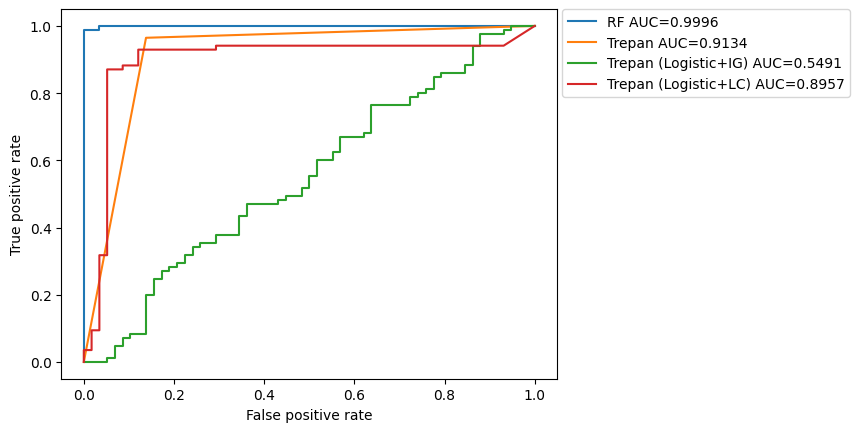
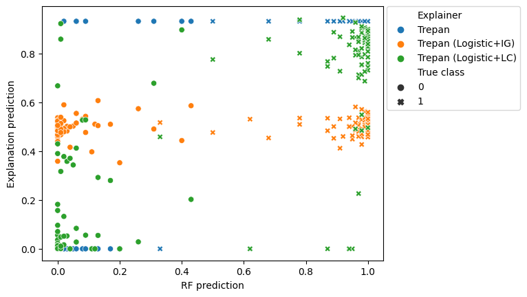

Learning trees to explain models
Group Meeting
Yuriy Sverchkov
October 30, 2020
Model explanation
- Highly accurate supervised learning models are often difficult to interpret
- Deep networks
- Random forests
- Boosted models
- Nonlinear SVMs
- There is a need in various settings to interpret model decisions
- High-stakes decision making
- Medical
- Financial
- Legal
- Legal protections
- User trust
- High-stakes decision making
Post-hoc model-agnostic model translation
- Post-hoc: given a learned model \(f: \mathcal X \rightarrow \mathcal Y\)
- model-agnostic: without assumptions about the inner workings of the model
- Contrast with saliency maps for CNNs
- model translation: we learn a model \(g\) that performs like \(f\) and is interpretable
- Also called mimic learning
Interpretable model: decision tree
Internal nodes describe splits of the data space (define the scope of their children)
Leaf nodes make predictions (often constant estimators, but can be models too)
Explanation tree learning
- Given a model \(f: \mathcal X \rightarrow \mathcal Y\) learn a decision tree with high fidelity to \(f\)
- Greedy algorithm:
- Start w/ a queue of one node (the root)
- While queue is not empty and stopping criteria are not met:
- Pop a node from the queue
- Generate data \((X, f(X))\) in the scope of the node
- Find a split that maximizes a split score on the data
- Generate chilren for the split and push into the queue
Question
| Which |
split space split score data generator leaf model |
makes |
high-fidelity iterpretable |
trees? |
The generalizedtrees python package
A joint framework for tree learning that allows swapping in different components that correspond to each design decision.
“Recipes” for making decision tree learners
Comparing data generation approaches
- Trepan (Craven and Shavlik 1995)
- Independent per-feature kernel density or empirical distribution
- Distributions are re-estimated locally as the tree grows
- A statistical test is used to determine whether to re-estimate the distribution
Comparing data generation approaches
- Born-again trees (Breiman and Shang 1996)
- ‘Smearing’ - taking a training instance and randomly swapping a random subset of its features with other instances.
UCI Breast cancer wisconsin dataset
- 569 samples
- 32 real-valued features
- Binary classification (Malignant vs Benign)
- Black box model: Random forest
ROC curves
Agreement plots

Comparing leaf model choice
- Constant estimators at the leaves, vs
- Logistic regression models (regularized with high L1 penalty)
ROC curves

Agreement plots

Tree models:
Near-future work
Further experiments with:
- Additional data generation strategies
- Additional splitting criteria
- Different split spaces
- splitting on groups of variables based on hierarchies
- data-driven composite splits (e.g. \(m\)-of-\(n\))